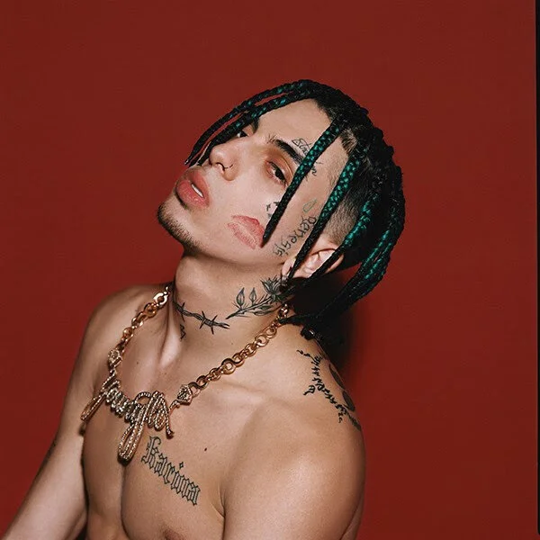
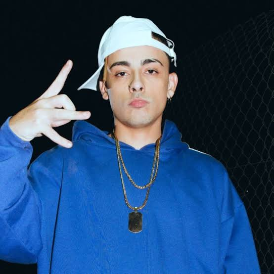
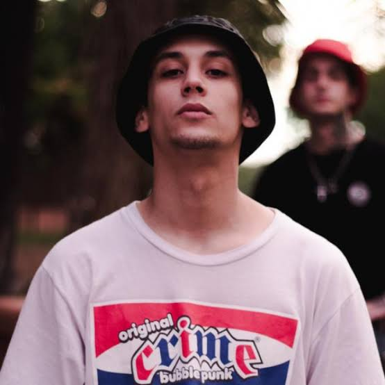

Artistas Recomendados
Duki
(Mauro Ezequiel Lombardo Quiroga, 24 de junio de 1996): Es el máximo exponente y pionero comercial del trap argentino, responsable de llevar el género desde las plazas hasta llenar estadios masivos a nivel global.
YsY A

(Alejo Nahuel Acosta Migliarini, 12 de julio de 1998): Creador de El Quinto Escalón y columna vertebral del trap independiente, destacado por su energía inigualable en vivo, métricas únicas e innovación constante.
C.R.O
(Tomás Campos, 11 de septiembre de 1998): Referente indiscutible del sonido más oscuro, nocturno y versátil de la escena (MDB Crew / Bardero$), fusionando el trap con tintes de rock y grunge.
Neo Pistea

(Sebastián Chinellato, 13 de abril de 1994): Pionero del sonido callejero y cerebro detrás de "Tumbando el club (Remix)", considerado el himno de unión definitivo del trap argentino.
Khea

(Ivo Alfredo Thomas Serue, 13 de abril de 2000): Figura clave en la internacionalización del género tras el fenómeno mundial de "Loca" (2017), abriendo las puertas del mercado global para todos sus contemporáneos.
Bhavi
(Indra Bhalavan, 22 de octubre de 1997): Aportó dinamismo, excentricidad y frescura melódica a la escena, destacándose por sus conceptos creativos, juegos vocales y colaboraciones icónicas.
Trueno

(Mateo Palacios Corazzina, 25 de marzo de 2002): Sirve como puente entre el hip-hop de la vieja escuela y el trap moderno, aportando contenido social, barras de alta calidad y el orgullo de su barrio (La Boca) al panorama mundial.
Nicki NIcole
(Nicole Denise Cucco, 25 de agosto de 2000): Fue la primera gran figura femenina del movimiento argentino en irrumpir masivamente a escala internacional con su inconfundible combinación de trap, R&B y soul.
Milo J

(Camilo Joaquín Villarruel, 25 de octubre de 2006): La gran revelación de la nueva generación, aportando una sorprendente madurez compositiva, sensibilidad lírica y versatilidad vocal a muy temprana edad.
Fazzini

(Gonzalo Fazzini, 31 de agosto de 1996): Pieza fundamental del underground y del trap independiente argentino, reconocido por mantener una estética cruda, pura y sin filtros comerciales.
Franky Style

(Francisco Santa Cruz, 24 de abril de 1994): Referente del trap crudo y fuertemente ligado a la cultura skater y callejera, actuando como un pilar del movimiento independiente en la escena nacional.
Homer El Mero Mero

(Lucas Darío Giménez, 5 de junio de 1990): Mitad del dúo Bardero$ y poseedor de una voz inconfundible en el rap/trap crudo, caracterizado por narrar la dura realidad de la calle con barras explícitas y directas.